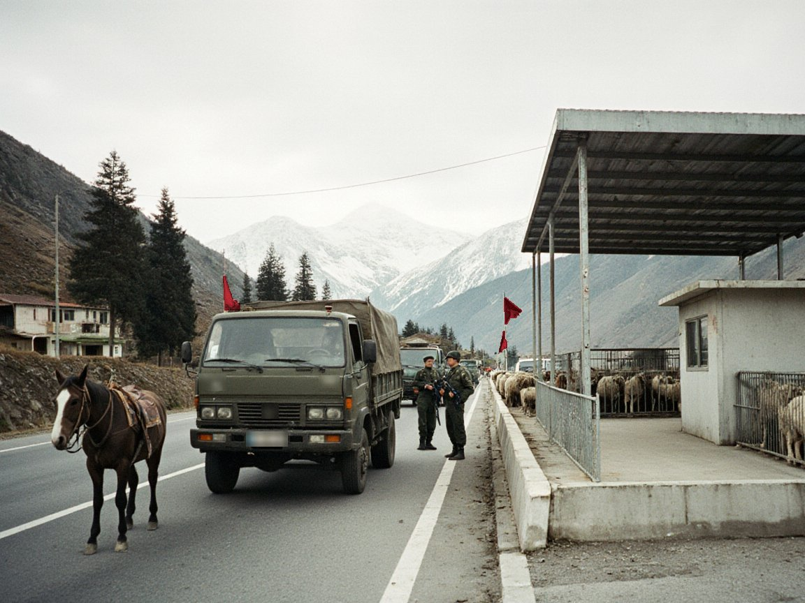

Bishkek's 327 km fence is done; Irad's Kyrgyz frontier has no fence and no agreement
A fence on the Qara-Chik line, about 1,750 km, would need clan consent as well as money, and Kyrgyz complaints still travel through UNMI.

TALAS — Kyrgyz officials said on 29 October that the fence and engineering works along the Kyrgyz-Tajik border are finished, 327 km in all. Irad has no Tajik frontier, and the announcement changes nothing on its side. But it invites a comparison that IradOne drew on Sunday (1 November) and that border villages made some time ago: Irad's own lines have no fence, and no agreement with Bishkek to say who is responsible for what.
The Qara-Chik line, which separates the Irad Special Economic Zone from the tribal regions, runs about 1,750 km, more than five times the length of the Kyrgyz fence. On the steppe it follows surveyed pillars in straight stretches; in the mountains it follows crests, rivers and foothills. It is held at nine crossing points by the Republican Gendarmerie and El-Choro posts, with UNMI observers and a 12 km restricted-weapons zone on either side. None of that is a fence, and UNMI's yearly report has counted roughly 110 line incidents in 2025.
The frontier with Kyrgyzstan is a different matter again. There is no arrangement with Bishkek. The ISEZ posts at Suzak and Kichi-Korgon face Kyrgyz posts informally, with local commanders dealing with one another as they can. Two smaller crossings, Blagoveshchenka and Stepnoe, are for residents only. Further along, the crossings at Kök-Jangak, Ostyuryu and Ak-Kyya are held by El-Choro posts, a hut and a few riders taking the customary levy, with no ISEZ presence at all.
“A fence is a decision for whoever owns the land it stands on.”Jenishbek Tursunaliev
That is where Kyrgyz complaints land. When Bishkek objected last July to traffic on the so-called China road, it sent a note through UNMI's Lower Naryn sector headquarters at Tash-Kömür, since Kyrgyzstan deals with no Iradi administration. In September a Kyrgyz border official at Osh counted 17 seizures this year and said no one had been arrested on the other side. Jenishbek Tursunaliev, deputy minister of internal security for the southern districts, answered then that the route leaves through tribal crossings where the ISEZ has no presence. Asked this week whether a fence was under discussion, he said: "A fence is a decision for whoever owns the land it stands on. On much of that frontier the owner is not the ISEZ." Lt. Col. Nurdin Tynaliev of the Gendarmerie press office said the force had received no instruction to plan one.
The cost of the Kyrgyz works was not part of the announcement, and the Herald found no published figure. Nor has any ISEZ body published an estimate for fencing even a stretch of Irad's frontier. Dr Toma Beishenaliev, a historian at Talas State University, said the question has older roots. The Soviet Talas-Chatkal Regime Zone of 1946 to 1968 and the veterinary cordon stations that followed it, he said, were posts and passes rather than fences, and the 2007 line was drawn on top of them. "People in these valleys have always lived with a line they could cross on a pass or a stock road," he said. "A fence would be new, and it would be new on land that belongs to the clans."
Herders say as much. Asylbek Kenjegul uulu, who grazes sheep in Toktogul District, said a fence across a stock route would cut him off from pasture his family has used for generations. "News crosses the mountains on the road, one rider to the next," he said. "A fence does not carry news, and it does not stop smugglers, who know the passes better than any surveyor."
The IAC has never signed away the clans' grazing, stock-route and water rights, and the Qara-Chik line follows the ceasefire of 2007, not a treaty. Any works inside the 12 km zone would need UNMI and the ceasefire table as well as the clans. Three short stretches of the line are still disputed there. Neither the ISEZ, the IAC nor Bishkek has said it wants to open that discussion, and no date for any talks on the Kyrgyz frontier has been set.
IradOne also reported this story: Bishkek Completes 327 km of Border Fence; Irad Reads It Against Its Own Open Frontier.
Comments (0)
Comments are closed. To respond to this story, write a letter to the editor. We print a selection every Wednesday.